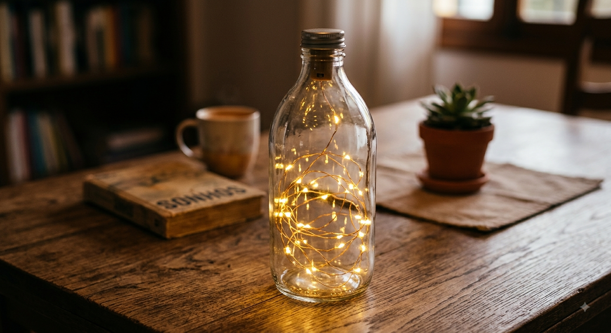
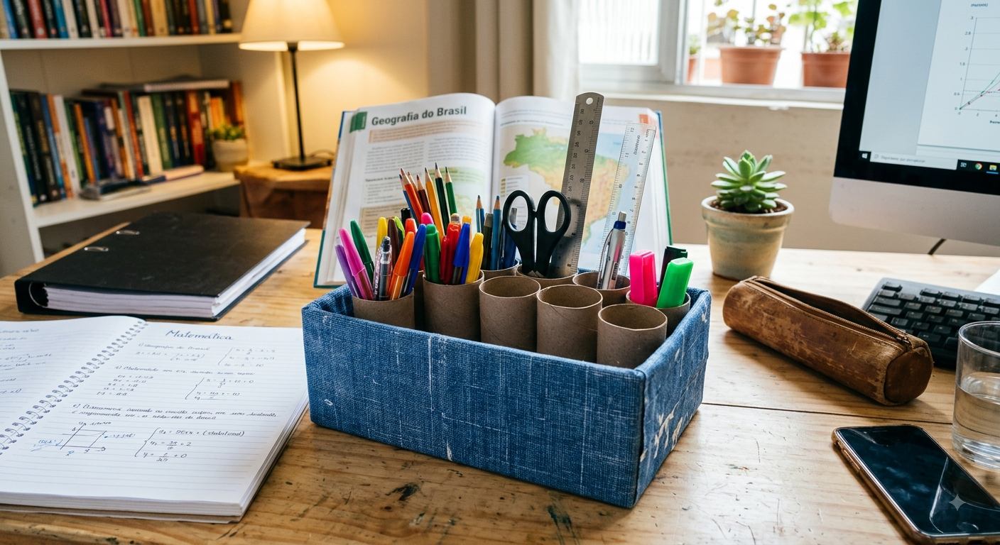

Projeto do 1º Ano do Ensino Médio: Transformando o descarte em arte, utilidade e decoração!
Meus Primeiros Passos na Reciclagem Criativa
Por: Livia Mendes
Oi pessoal! Bem-vindos ao meu site escolar! Neste primeiro post vou contar como tudo começou. Eu sempre olhava para garrafas plásticas e caixas de papelão vazias e pensava: "Será que eu não posso fazer nada útil com isso?".
A resposta é: SIM! E você ficaria surpreso com o resultado. Neste blog, vou compartilhar projetos simples, divertidos e super úteis que você pode fazer na sua casa. Vamos juntos transformar o lixo em luxo!
Luminária Aconchegante com Garrafa de Vidro
Por: Livia Mendes

Sabe aquela garrafa de azeite ou de suco de vidro que iria para a coleta seletiva? Ela pode virar uma luminária moderna para a sua sala ou quarto!
Basta higienizar bem o vidro, retirar o rótulo e inserir um fio de luzes LED (como o pisca-pisca de Natal). O resultado é uma peça de iluminação elegante, custo quase zero e sustentável.
Organizador de Escrivaninha de Papelão
Por: Livia Mendes

Para manter o cantinho dos estudos organizado sem gastar dinheiro, usei uma caixa de sapato e rolos de papel higiênico. Encapei a caixa com retalhos de tecido antigo e cortei os rolos na altura certa para fazer divisórias de canetas e lápis.
Além de ajudar no estudo do dia a dia, evitou o descarte desnecessário de papelão na minha casa!